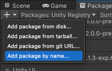
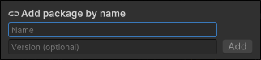

If you know the exact name of a UPM packageA Package managed by the Unity Package Manager. Refer to Packages. See in Glossary you want to install, you can use the Add package by name option to install it. This is a quick way to install a UPM package from a registry.
This method works for any UPM package and version that’s currently hosted on the Unity package registry or any scoped package registry you have set up for the current project. It also applies to any UPM package in the Unity registry that came from the Asset StoreA growing library of free and commercial assets created by Unity and members of the community. Offers a wide variety of assets, from textures, models and animations to whole project examples, tutorials and Editor extensions. More info See in Glossary.
Specifying the version is optional. If you don’t know which version to install, or want to install the latest compatible version, enter only the package name.
Note: The latest compatible version might not be the latest published package. If there is a released package version and a newer pre-release or experimental version, Package Manager selects the released package version, unless you explicitly input a value in the optional Version field.
Before you begin
Make sure you know the package’s name. The package name is a unique identifier, not the display name used on user interfaces and documentation.
Inspector window showing the name and display name
For packages in the Unity registry, the name’s unique identifier uses reverse domain name notation. Examples include com.unity.example and com.meta.example. For packages in a scoped registry, the name might not follow the same pattern.
For any package in the UPM format, if you can see the package in Package Manager, select it and view its details in the InspectorA Unity window that displays information about the currently selected GameObject, asset or project settings, allowing you to inspect and edit the values. More info See in Glossary window. The Name value is the package name.
Other ways of determining a package name vary, depending on the registry that hosts it:
For a package in the Unity registry:
Use the lists in Released packages and Pre-release packages to identify a package by its display name, such as 2D Animation. The hyperlink value is the name of that package; in this case, com.unity.2d.animation.
The package documentation might have installation instructions that explicitly provide the name value.
The package documentation URL often nests the package name in its address. Using the ARAugmented Reality More info See in Glossary Foundation
package as an example, its package documentation URL is https://docs.unity3d.com/Packages/com.unity.xr.arfoundation@5.0/manual/index.html; the com.unity.xr.arfoundation component is that package’s name.
For a package in a scoped registry, if you can’t determine its name by using the Package Manager and Inspector windows, contact the package creator and request the package name. The package creator recorded this value as a required property in the package manifestEach package has a manifest, which provides information about the package to the Package Manager. The manifest contains information such as the name of the package, its version, a description for users, dependencies on other packages (if any), and other details. More info See in Glossary file (package.json).
Click the add button in the status bar. The options for adding packages appear.

Add package by name option
Select Add package by name from the add menu. Two text boxes and an Add button appear.
Enter the package Name, as determined in the Before you begin section.

Enter the package name and package version (optional) then click Add
Note: If you enter an invalid package name or version, Package Manager warns you that it can’t find that name or version. Verify that the package name and version are correct and try again.
(Optional) If you know which version you want to install, enter the full package version, such as 1.3.0-pre.2, in the Version (optional) box.
Click Add. If Unity was able to install the package successfully, the package now appears in the package list like any other installed UPM package.